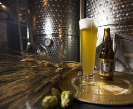
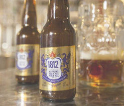
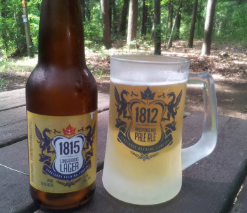

Product Images



Articles
Our Inspiration
In 1812, the strong Canadian spirit prevailed, protecting our lands from invasion and restoring peace with our American neighbours in 1815. Thankfully, this peace has endured on our land for nearly 200 years and this calls for a celebration
Our Bottles
At Strathroy Brewing Company we try to make the finest beer and need to use a bottle of equal quality. We use the amber “Industry Standard” bottle to help protect the beer against light damage. Also, these bottles will go on to be re-used 15 to 20 times, making it a wise choice to help reduce waste.